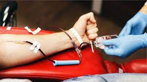
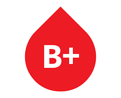
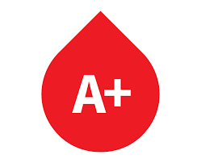

BLOOD SAVES LIVES.
Blood is alive, because it has thousands of living Cells in it.
If it was not for blood donors, life-saving medical treatment would not be possible. Unlike medications that are manufactured, blood cannot be manufactured. Healthy donors are the only source of blood for those who need it.
 |
 |
 |  |
 |
|||
| Donation Sites | Blood Type | Blood Blank | Donation type | Selection Criteria | Blood Bank | Know More | Terms And Conditions |
| KNOW YOUR BLOOD TYPE |
|---|
| A blood type (also known as a blood group) is a classification of blood, based on the presence and absence of antibodies and inherited antigenic substances on the surface of red blood cells (RBCs). |
|  |  |
| Blood type o can be O+ or O- .The blood type is known as Universal Donor. |
A good adaptation to the environment |
 |
 |
| Blood type o can be O+ or O- .The blood type is known as Universal Donor. |
A good adaptation to the environment |